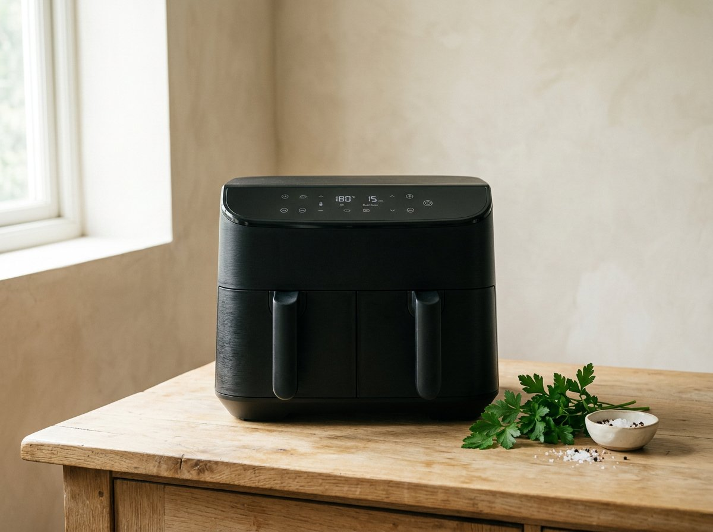

CHEFMAN · Air fryer
The two-basket workhorse
Two baskets, two temperatures, one finish time.
Affiliate link — this site earns from qualifying purchases. Price and availability are set by Amazon and are not reproduced here. ASIN B0CDY277D3.
What the listing claims
Every figure below is the manufacturer’s own, taken from the product listing on 20 November 2026. None of it is a measurement made by this desk, and it is labelled as a claim rather than presented as a fact.
Source: Amazon listing, ASIN B0CDY277D3, read 2026-11-20. Category path observed: Home & Kitchen › Kitchen & Dining › Small Appliances › Fryers › Air Fryers.
Where a number needed checking
Two 3 qt baskets add to the 6 qt total the listing states.
3 + 3 = 6
Arithmetic on the listing’s own numbers. This is not a measurement of usable capacity — see the capacity guide.
What this page cannot tell you
This is the part that decides whether you are still happy with it in a month, and it is the part most buying pages quietly leave out.
- “Sync Finish”, “Hi-Fry” and “Auto Shutoff” are listed as features; the timing behaviour of these modes is not documented in the data available to this desk.
- Actual usable basket volume, external dimensions and oven-safe accessory limits are not stated on the listing as read.
Why there is no “we tried it” here
This desk has not used this product. FTC guidance on endorsements is explicit that you cannot describe your experience with something you have not tried, so this page does not. What it does instead is compare published specifications and fit, and name what is missing. How we choose · what is still unverified.
Where it sits among the others
Emeril Lagasse 26 qt French door — One big cavity, a door instead of a drawer.
Chefman 8 qt TurboFry — One deep basket for big single batches.
Keep reading